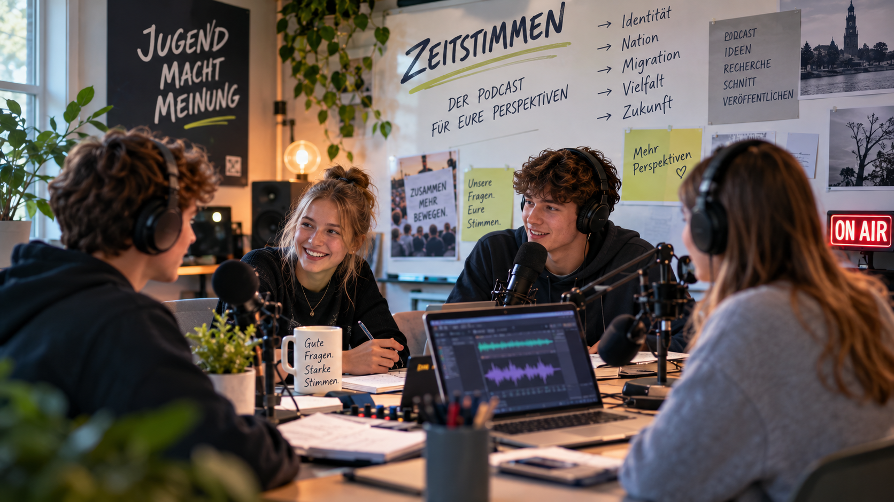

Handlungssituation
Materialzugriff
Du arbeitest nicht einfach ein Thema ab: Du übernimmst eine Rolle in einer Jugendredaktion und entwickelst gemeinsam mit deinem Team einen Podcast für andere Jugendliche.
Jugendredaktion „Zeitstimmen“
Ihr seid Teil einer Jugendredaktion, die monatlich einen Podcast veröffentlicht. Ziel ist es, komplexe Themen verständlich und spannend für Jugendliche aufzubereiten.
Aus der Redaktionssitzung

„Viele Jugendliche fragen sich, was es bedeutet, deutsch zu sein. Manche rufen nach mehr Patriotismus, andere warnen vor Nationalismus. Wieder andere betonen Migration, Vielfalt oder sehen sich längst eher als Europäer:innen. Das Thema ‚Identität und Nation‘ spaltet, aber es geht uns alle an. Deshalb möchte ich, dass wir eine Podcast-Folge dazu produzieren.“
Euer Auftrag
Produziert die Podcast-Folge:
„Identität und Nation – was heißt das für uns heute?“
Eure Folge soll eine klar erkennbare Perspektive haben, andere Positionen einbeziehen und so gestaltet sein, dass Jugendliche eure Argumentation gut nachvollziehen können.
Euer Podcast entsteht im Medienzentrum Aurich.
Für Aufnahme und gegebenenfalls Schnitt nutzt ihr die dort vorhandenen Geräte und Räume. Damit wird aus der Lernsituation ein reales Medienprojekt mit einem echten Produktionsort.
Handlungssituation verstehen · Wissenscheck
Wählt die jeweils am besten begründete Antwort. Eine Antwort ist richtig.